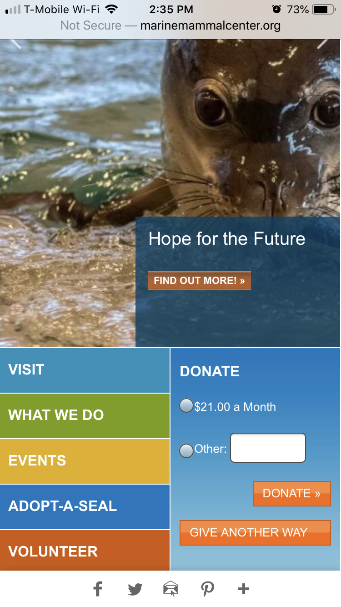
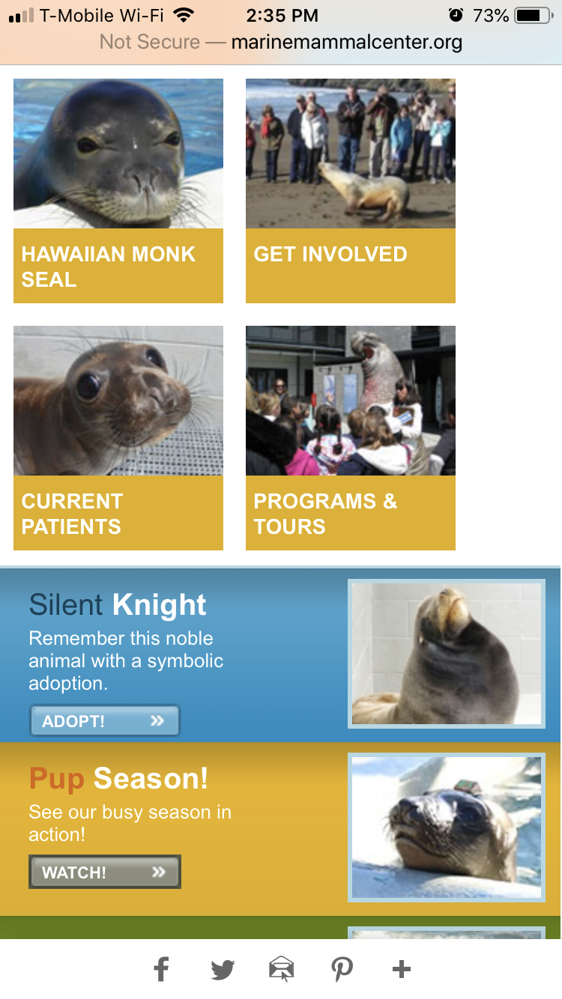
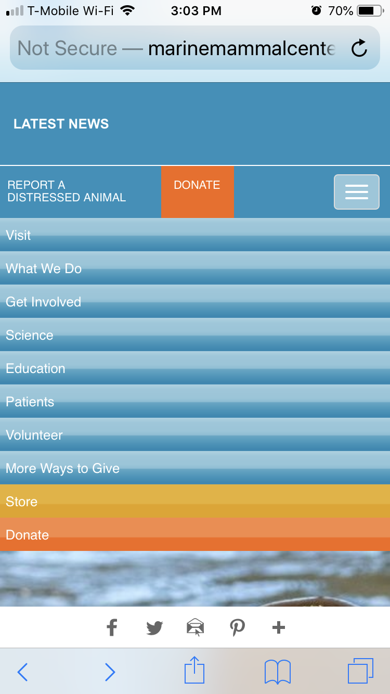
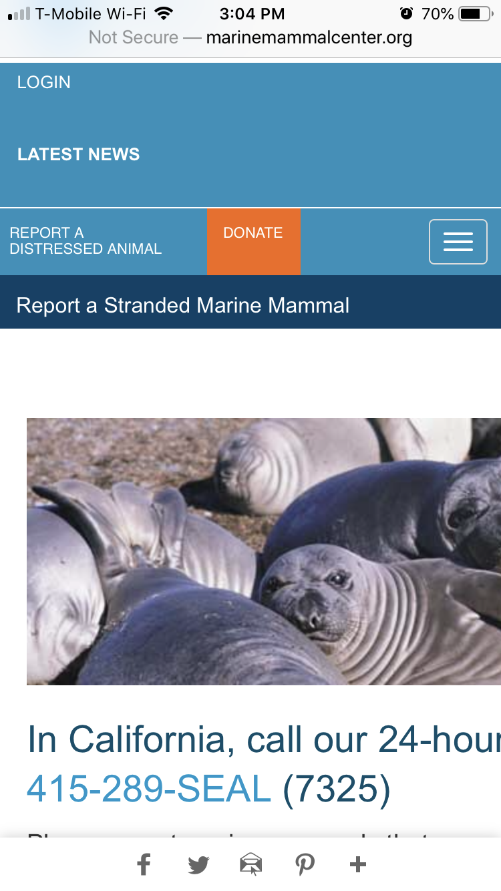

The World in Your Pocket
We rely so much on those little devices that it's important that they also project out what we want them to see but on a teeny little screen.
Same page but is it really?
We as a modern population become more and more reliant upon our mobile devices. So as web developers we have to be aware of the things we design and create are not only working on a laptop or desktop computer but also functional on a screen the size of a playing card. If our desktop presentation doesn't translate to mobile, then we haven't succeeded in creating a good user experience.
Conducting the Test
For this part of the assignment, we are to have new users look at the site we used in the original test. However, due to my time constraints, I asked my previous tester to take a look at the same website she just explored on a mobile device. I felt that this actually worked well given that the interest in the subject matter was there so why not continue and see how things worked for her on a phone.
I had her look at the website on my iPhone 6S Plus running the most updated iOS and using a combination of Google Starbucks wireless and T-Mobile cellular conncection.
Did it work?
The first observation is the "Donate" button front and center. It wasn't appreciated as that to be the focal element. One immediate comment was the concern about donating via a mobile platform. The slow scrolling images were appreciated again.
The color navigation buttons below the pictures are nice and actually better than the desktop site. But then below that, only one button identifies an animal - the Hawaiian Monk Seal. My user clicked on it because of the cute factor of the seal's face and was immediately taken to a different page.
She was met with disappointment again. Instead of getting information about the animal like the link initmated, she was taken to a not-so-mobile-friendly page about Ke Kai Ola - the facility that cares for the Hawaiian Monk Seal. Although it's a great cause, my user wasn't pleased that she had to look around and find any information on the animal itself.
Additional observations
My user commented that the mobile page seems to use more images for links than the desktop version. She actually found herself interacting with the page more because of the images. But also commented that the humburger nav bar wasn't very easy to use. She noted that it's on the right hand side of the page and not on the left where most people would start. In addition to the nav bar being not easy to use, the color scheme again was not user friendly. The blue is nice but there isn't even differentiation or contrast to create something visually appealing.
The biggest challenge? The need to resize the page. This is a BIG fail for the designer. Years ago as the web was emergining on the little screens, it was expected that more often than not that a web page might not fit. I agreed with my user that this is frustrating and probably the worst thing a designer could do aside from a bazillion pop up ads or windows.
Another observation that she made, and with which I completely agree, is that for an organization that helps animals and wants the citizen science involvement, the lack of immediate information on how to report a distressed animal or at least identify an animal isn't as prominent as it should be for a mobile web page. She said that if she's going to be looking up this website on her phone, it's probably because there's an animal in trouble or she needs to identify what she's looking at. And she's not wrong. After all,most of the time we're looking for immediate answers when we use our phone to look up something.
Conclusion
My user commented that neither platform really evoked any immediate need to act, volunteer, or donate. This is important to note since The Marine Mammal Center is a nonprofit organization and relies on people's time and/or money that they could be losing out on potential volunteers and donors. Yet, the information is there and is very comprehensive. Which nows begs the question - how much is too much on the desktop and how much is not enough on the mobile?